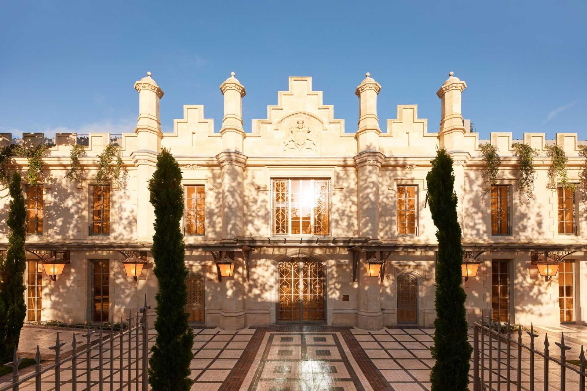
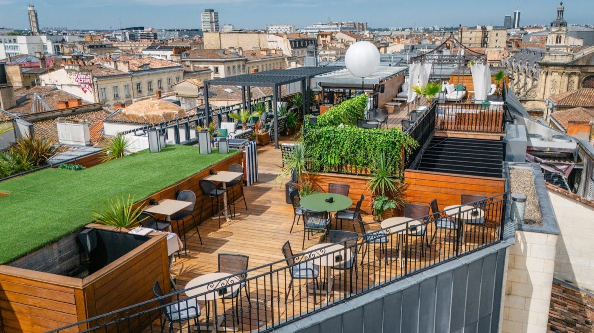

Bordeaux a changé. Ce n'est plus la ville austère des négociants en vin, c'est aujourd'hui
l'une des destinations romantiques les plus sous-estimées de France, portée par une scène
hôtelière qui rivalise avec Paris sur le luxe et surpasse Lyon sur l'expérience vignoble.
Par Lucas Lecoq, rédacteur en chef✺Publié le 6 août 2026✺16 min de lecture

L'ancien chai Calvet, cours du Médoc, devenu le Mondrian Bordeaux Les Carmes
sous la main de Philippe Starck. Photo : Mondrian Bordeaux Les Carmes, site officiel.
Réponse immédiateTop 3 pour un week-end romantique à Bordeaux
InterContinental Bordeaux Le Grand Hôtel (Indice Romantisme 4,8/5) :
suites Bar à Vins, spa Guerlain, restaurant 2 étoiles Michelin. Le summum du luxe bordelais.
Villas Foch (Indice Romantisme 4,7/5) : cave voûtée avec piscine, offre
tout-inclus romantique, bar Le Ferdinand. Raffinement à la française.
COMO Cordeillan-Bages (Indice Romantisme 4,6/5) : escapade vignoble
Médoc, table signée par un chef trois étoiles, isolement total. Pour l'expérience
oenologique ultime.
Nous avons sélectionné 8 établissements selon notre méthodologie propriétaire
LMHS : Indice Romantisme sur 5 (intimité, éléments de décor, services couple, calme,
vue ou cour intérieure), score oenologie, ambiance et rapport qualité-prix.
Bordeaux a changé. Ce n'est plus la ville austère des négociants en vin, c'est aujourd'hui l'une des destinations romantiques les plus sous-estimées de France, portée par une scène hôtelière qui rivalise avec Paris sur le luxe et surpasse Lyon sur l'expérience vignoble. Nous avons sélectionné 8 établissements selon notre méthodologie propriétaire LMHS : Indice Romantisme sur 5, score oenologie, ambiance, services couple et rapport qualité-prix.
01

1. InterContinental Bordeaux Le Grand Hôtel Indice Romantisme 4,8/5
Place de la Comédie, 33000 Bordeaux · À partir de 450 €/nuit
Le palace historique de Bordeaux incarne le luxe intemporel. Ses 130 chambres et 40 suites signées Jacques Garcia offrent un confort exceptionnel en plein cœur du Triangle d'Or, dans un bâtiment dessiné par Victor Louis, l'architecte du Grand Théâtre qui lui fait face. Le point fort romantique : les suites Bar à Vins avec dégustation privée et cave de 18 000 bouteilles. Le spa Guerlain propose 8 cabines dont une duo, avec bassin relaxant et soins signature Miroir d'Eau. Le restaurant Le Pressoir d'Argent Gordon Ramsay, 2 étoiles Michelin, et le rooftop complètent l'expérience. Ambiance corporate parfois perceptible en haute saison. Pour couples cherchant le summum du luxe bordelais avec gastronomie étoilée et cave exceptionnelle.
25 cours du Maréchal Foch, 33000 Bordeaux · À partir de 236 €/nuit
Boutique-hôtel 5 étoiles de 20 chambres, dont 12 classiques et 8 suites, Villas Foch incarne le raffinement à la française. L'hôtel particulier haussmannien du XIXe siècle, dans le secteur classé au patrimoine mondial de l'UNESCO, conserve moulures et escalier monumental, contrastant élégamment avec la modernité discrète. La cave voûtée en pierres typiques abrite, sur 110 m², piscine chauffée, sauna et espace fitness. Le bar Le Ferdinand propose une sélection resserrée de grands crus classés et de spiritueux. L'offre « Bordeaux dans un écrin » (495 €) inclut hébergement, dîner, cocktail, spa et accès Cité du Vin. Réservation difficile en haute saison, taille réduite. Pour couples cherchant une expérience bordelaise complète avec intimité.
3. Château Cordeillan-Bages (COMO) Indice Romantisme 4,6/5
Route des Châteaux, Pauillac (50 km de Bordeaux) · À partir de 259 €/nuit
Château viticole du Médoc, Relais & Châteaux, Cordeillan-Bages offre l'escapade vignoble authentique. 28 chambres spacieuses, design contemporain signé Paola Navone, vue vignoble. Le restaurant Le Cordeillan a rouvert le 11 mai 2026 : la carte est signée Fabien Ferré, chef trois étoiles à La Table du Castellet, en Provence, où il reste en poste ; Mathieu Martin tient le rôle de chef exécutif sur place. La maison n'est donc pas étoilée à ce jour, c'est une table à suivre. Cave de près de 1 600 bouteilles, forte de Château Lynch-Bages. Piscine, spa, expériences oenologiques privées. Isolement total, voiture nécessaire, prix élevés. Pour couples cherchant l'immersion Médoc.
108 rue Abbé de l'Épée, 33000 Bordeaux · À partir de 230 €/nuit
Hôtel-galerie d'art confidentiel, 12 chambres puis 8 nouvelles ouvertes en octobre 2024, Yndo réinvente le luxe singulier. Chaque chambre est unique, meublée de pièces de design emblématiques : Hubert Le Gall, Marcel Wanders, Tom Dixon, les frères Campana, Edra. La propriétaire Agnès Guiot du Doignon a chiné avec flair des pièces contemporaines. Restaurant réservé aux clients, terrasse, cour arborée, galerie d'art vivante. Intimité absolue, vingt chambres au maximum, prix premium, pas de spa. Pour couples amateurs d'art contemporain et d'intimité absolue en centre-ville.
5. Mondrian Bordeaux Les Carmes Indice Romantisme 4,3/5
81 cours du Médoc, 33000 Bordeaux · À partir de 320 €/nuit
Cinq étoiles design signé Philippe Starck, 97 chambres et suites de 25 à 52 m², le Mondrian transforme l'ancien chai Calvet du XIXe siècle en voyage entre Orient et Occident. Miroirs omniprésents, béton moulé, bureaux derrière les lits, matériaux nobles. Patio arboré de 200 m² au cœur de l'hôtel, piscine intérieure, restaurant Morimoto, première table européenne du chef japonais étoilé Masaharu Morimoto, spa de 4 cabines dont une duo, hammam et salle de sport. Ambiance très design et tendance, qui peut manquer de chaleur. Pour couples amateurs de design et de gastronomie fusion.
Allées de Tourny, 33000 Bordeaux · 170 à 316 €/nuit
Quatre étoiles de 55 chambres dont 3 suites, l'Hôtel de Sèze conjugue charme XVIIIe revisité et confort contemporain. Inspiration classique, moulures, hauteur sous plafond, ambiance cosy. Le spa réunit jacuzzi, hammam, sauna, douche sensorielle et cabine duo. Restaurant Comptoir de Sèze en bistronomie, bar, salons, fumoir, cave à cigares, golf privé pour les clients. Un spa duo en plein centre-ville, dans une ambiance XVIIIe : c'est l'argument. Hôtel de taille moyenne, moins exclusif que les boutique-hôtels de cette page. Pour couples cherchant spa et gastronomie en centre-ville avec charme historique.
7. Burdigala by Inwood Hotels Indice Romantisme 3,9/5
115 rue Georges Bonnac, 33000 Bordeaux · 170 à 443 €/nuit selon la saison
Hôtel lifestyle 5 étoiles rénové en 2023, 83 chambres et suites, le Burdigala se veut le « hub du quartier ». Espaces partagés vibrants et rassembleurs, chambres calmes et paisibles, loin du tumulte. Restaurant Madame B autour de la saison, bar intimiste, cinéma de 19 places, verrière en jardin d'hiver, espace de coworking, boutique, salles de jeux. Service exceptionnel, chambres modernes et spacieuses. Ambiance de hub social plus que d'intimité romantique, et pas de vrai spa pour deux. Noté 4,8/5 sur TripAdvisor et classé 2e meilleur hôtel de France aux Travellers' Choice 2025. Pour couples jeunes cherchant modernité et service premium.
8. Hôtel Indigo Bordeaux Centre Chartrons Indice Romantisme 3,7/5
18 parvis des Chartrons, 33000 Bordeaux · 139 à 339 €/nuit
Boutique-hôtel coloré et bohème de 100 chambres en 8 catégories, l'Indigo transforme un ancien Mercure en lieu chaleureux. Décor de l'architecte Stella Cadente, couleurs empruntées au bassin d'Arcachon (sable, bleu, rose), meubles en rotin, lambris, objets chinés. Le rooftop Le Tchanqué occupe le 7e étage avec vue sur la Garonne, et les suites en rotonde offrent un panorama. Engagement écologique, ancrage local des équipes. Le rooftop et les suites rotonde sont les vrais arguments romantiques. Hôtel de chaîne, donc moins de personnalisation. Pour couples cherchant la vue Garonne et le rapport qualité-prix.
Classement par Indice Romantisme LMHS. Les scores LMHS sur 10 de l'InterContinental,
de Yndo, du Burdigala et de l'Hôtel de Sèze sont repris à l'identique de notre
palmarès des hôtels de Bordeaux, afin qu'une même
adresse ne porte jamais deux notes différentes sur ce site. Tarifs et prestations relevés le
6 août 2026 sur les sites officiels.
Guide pratique : budget, saisons, conseils
Budget moyen d'un week-end romantique à Bordeaux : 500 à 800 € pour deux nuits (chambre et petit-déjeuner, plus un dîner gastronomique). Hôtels 3 et 4 étoiles : 200 à 320 € la nuit. Palaces : 400 € et plus.
Meilleures saisons : avril et mai pour les fleurs et les températures douces, septembre et octobre pour les vendanges et la lumière dorée. Éviter juillet et août, tourisme massif et chaleur.
Conseil LMHS : Bordeaux est la seule grande ville française où l'expérience oenologique s'intègre naturellement à l'expérience romantique hôtelière. Le score moyen d'intégration du vin dans l'offre romantique des 8 établissements est de 3,25/5. Privilégiez les suites Bar à Vins (InterContinental), la cave voûtée (Villas Foch) ou l'escapade vignoble (Cordeillan-Bages).
Le mot de Lucas LecoqBordeaux n'est plus une destination de passage
Bordeaux a changé. Ce n'est plus la ville austère des négociants en vin, c'est aujourd'hui l'une des destinations romantiques les plus sous-estimées de France, portée par une scène hôtelière qui rivalise avec Paris sur le luxe et surpasse Lyon sur l'expérience vignoble. L'InterContinental Le Grand Hôtel incarne cette transformation : un palace historique qui ne renie pas son passé mais l'enrichit de suites Bar à Vins et d'un spa Guerlain. Villas Foch, elle, réinvente le raffinement français. Et Cordeillan-Bages ? C'est l'escapade vignoble que vous aviez toujours rêvée, avec cette réserve que sa table vient de rouvrir et n'a pas encore d'étoile à son nom. Bordeaux n'est plus une destination de passage, c'est un choix délibéré pour les couples qui cherchent le luxe, la gastronomie et l'oenologie en harmonie.
Lucas Lecoq, rédacteur en chef
Questions fréquentes : hôtel romantique à Bordeaux
Quel est le meilleur hôtel romantique de Bordeaux ?
L'InterContinental Bordeaux Le Grand Hôtel (Indice Romantisme LMHS 4,8/5) offre le meilleur équilibre entre luxe, gastronomie (2 étoiles Michelin), spa Guerlain et expérience oenologique (suites Bar à Vins). Pour l'intimité absolue, Yndo Hôtel (4,5/5) prime. Pour l'expérience vignoble, Château Cordeillan-Bages (4,6/5).
Quel hôtel romantique à Bordeaux avec spa couple ?
Trois options : l'InterContinental (spa Guerlain, cabine duo), l'Hôtel de Sèze (jacuzzi, hammam, sauna et cabine duo, 170 à 316 €) et le Mondrian (spa de 4 cabines dont une duo). L'Hôtel de Sèze offre le meilleur rapport qualité-prix pour un spa à deux en centre-ville.
Quel hôtel romantique à Bordeaux pour une demande en mariage ?
L'InterContinental Le Grand Hôtel (rooftop panoramique, restaurant 2 étoiles Michelin, suites Royale de 100 m² avec terrasse) ou le Château Cordeillan-Bages (isolement au cœur du vignoble, table signée par un chef trois étoiles, cave de près de 1 600 bouteilles). Tous deux proposent des services événementiels haut de gamme.
Quel budget prévoir pour un week-end romantique à Bordeaux ?
Budget moyen sur deux nuits : 500 à 800 € (chambre 200 à 320 € la nuit, petit-déjeuner 20 à 30 €, dîner gastronomique 80 à 150 € par personne). Palaces (InterContinental, Villas Foch) : 400 € et plus la nuit. Boutique-hôtels (Yndo, Mondrian) : 230 à 320 € la nuit.
Y a-t-il des hôtels romantiques avec vue sur la Garonne à Bordeaux ?
Oui. L'Hôtel Indigo Bordeaux Centre Chartrons (suites en rotonde panoramiques sur la Garonne, rooftop Le Tchanqué, 139 à 339 €). Le Renaissance Bordeaux propose également des chambres Muse City View et une piscine au dernier étage. L'Indigo offre le meilleur rapport qualité-prix pour la vue Garonne.
Quels hôtels romantiques près du vignoble bordelais ?
Château Cordeillan-Bages, à Pauillac (50 km, Relais & Châteaux, vignoble du Médoc, à partir de 259 €). Escapade vignoble authentique, avec une table rouverte le 11 mai 2026 dont la carte est signée par Fabien Ferré, chef trois étoiles en Provence, et une cave de près de 1 600 bouteilles. Voiture nécessaire. Alternative en ville : Villas Foch et son offre « Bordeaux dans un écrin » avec accès à la Cité du Vin (495 €).
Bordeaux ou Lyon pour un week-end romantique ?
Bordeaux prime pour l'expérience oenologique (Indice Vin & Romantisme LMHS de 3,25/5 en moyenne sur les 8 adresses de cette page). Consultez notre palmarès des hôtels romantiques de Lyon pour comparer. Bordeaux : vignoble et gastronomie étoilée. Lyon : gastronomie et architecture Renaissance.
Méthode et sources
8 établissements bordelais classés par l'Indice Romantisme LMHS, noté sur 5, le même instrument que dans nos palmarès de Paris et de Lyon : intimité, éléments de décor, services couple, calme, vue ou cour intérieure. S'y ajoute l'Indice Vin & Romantisme, noté sur 5, indice thématique propre à cette page, qui mesure l'intégration de l'oenologie à l'offre romantique (dégustation privée, cave, accès vignoble, accords mets-vins). Aucun séjour de contrôle n'a été effectué pour ce palmarès, et nous ne prétendons pas le contraire : tarifs, capacités, prestations et distinctions ont été relevés le 6 août 2026 sur les sites officiels des établissements, le Guide Michelin et TripAdvisor. Les scores LMHS sur 10 de l'InterContinental, de Yndo, du Burdigala et de l'Hôtel de Sèze sont repris à l'identique de notre palmarès des hôtels de Bordeaux, afin qu'une même adresse ne porte jamais deux notes différentes sur ce site. Aucun partenariat commercial, aucune affiliation. Photographies : sites officiels des établissements.
Conclusion : choisir son hôtel romantique à Bordeaux
Bordeaux offre une palette complète pour un week-end romantique : du palace historique (InterContinental) au boutique-hôtel confidentiel (Yndo), de l'escapade vignoble (Cordeillan-Bages) à l'expérience design (Mondrian). Notre méthodologie LMHS privilégie l'Indice Romantisme, l'intégration de l'oenologie, les services couple et l'ambiance. Consultez le palmarès complet des hôtels de Bordeaux pour tous les standings, et le palmarès national des hôtels et spas de France 2026 pour la comparaison nationale.